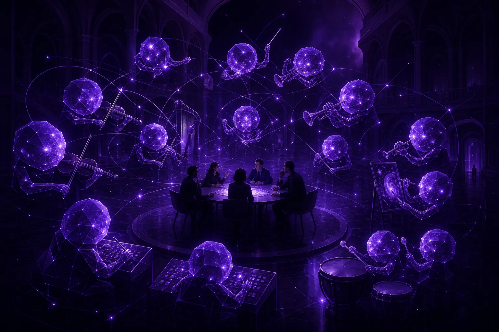

Organisasi pemasaran masa depan: kurang serah tangan, lebih ramai konduktor

Dalam organisasi pemasaran masa depan, ejen AI mengambil alih kebanyakan kerja pengeluaran, pemantauan dan pelaporan, dan peranan manusia beralih ke arah pertimbangan: menetapkan hala tuju, menyunting kreatif, mentadbir ejen dan memiliki hubungan. Pasukan menjadi lebih rata dengan lebih sedikit serah tangan. Peranan baharu yang paling penting ialah konduktor, ahli strategi yang mengorkestrasi ejen dan kekal bertanggungjawab atas apa yang mereka hasilkan.
Apakah yang berubah apabila ejen menyertai pasukan?
Lihat minggu mana-mana jabatan pemasaran dan anda akan menemui rantaian serah tangan. Penyelidikan memberi taklimat kepada strategi, strategi kepada kreatif, kreatif kepada media, media kepada pelaporan, dan pelaporan kembali kepada penyelidikan. Setiap serah tangan kehilangan konteks dan menambah beberapa hari.
Ejen memampatkan rantaian itu. Ejen penyelidikan boleh menyerahkan dapatan terus kepada ejen kreatif, yang boleh menyerahkan varian terus kepada ejen pengoptimuman, semuanya dalam satu gelung. Manusia tidak lagi berada di antara setiap pautan. Mereka berada di atas gelung, memutuskan untuk apa gelung itu dan sama ada outputnya cukup baik.
Peranan pemasaran manakah yang mengecil dan yang mana berkembang?
Kami cuba bersikap jujur tentang perkara ini, kerana jaminan yang samar-samar tidak membantu sesiapa. Memahami kesan AI terhadap pekerjaan pemasaran ialah antara momen yang paling dicari pemasar dengan penuh kebimbangan.
Kerja yang mengecil
- Pendengaran sosial dan penyusunan laporan secara manual.
- Draf pertama salinan rutin dan penghasilan varian.
- Pelarasan bidaan dan bajet setiap jam.
- Mesyuarat status yang wujud semata-mata untuk memindahkan maklumat antara pasukan.
Kerja yang berkembang
- Mengkonduksi: menetapkan matlamat bagi gelung ejen dan memiliki output mereka.
- Menyunting: memilih dan membentuk daripada pilihan yang berlimpah, iaitu kemahiran cita rasa.
- Mentadbir: menulis piagam, menyemak log, memutuskan di mana autonomi telah diperoleh.
- Menghubungkan: perbualan manusia dengan pelanggan, rakan kongsi dan rakan sekerja yang tidak patut dipalsukan oleh ejen.
Perhatikan bahawa kerja yang berkembang kebanyakannya kerja kanan. Cabaran organisasi yang sebenar bukanlah kehilangan pekerjaan secara abstrak; ia ialah bagaimana kakitangan junior belajar membuat pertimbangan apabila ejen mengambil alih tugas yang dahulunya menjadi tempat mereka belajar. Kami berpendapat jawapannya ialah perantisan melalui semakan: kakitangan junior mengikuti konduktor di titik semak dan menerangkan mengapa mereka akan meluluskan atau menolak.
Apakah sebenarnya yang dilakukan konduktor sepanjang hari?
Peranan konduktor, ditakrifkan
Konduktor ialah ahli strategi pemasaran yang menetapkan matlamat dan batasan bagi satu set gelung ejen AI, menyemak output mereka di titik semak, membuat keputusan berkaitan jenama dan etika, dan bertanggungjawab secara peribadi kepada perniagaan atas hasilnya.
Hari biasa: dua puluh minit untuk ringkasan ejen semalaman, sejam untuk suntingan kreatif, masa bersama pelanggan atau pemilik perniagaan tentang maksud penyelidikan khalayak, dan semakan mingguan log ejen. Kurang masa dalam hamparan. Lebih masa untuk berfikir dan berbincang.
Sekecil manakah pasukan pemasaran boleh menjadi?
Lebih kecil daripada hari ini, tetapi tidak sekecil yang digembar-gemburkan. Ejen menskalakan pelaksanaan; mereka tidak menskalakan akauntabiliti atau hubungan. Jenama masih memerlukan orang yang mengenali pelanggan, memahami perniagaan dan boleh mempertahankan sesuatu keputusan di bilik lembaga.
Inilah soalan yang diajukan komuniti di Marketing Mondays kepada sekumpulan pemimpin pemasaran pada 12 Oktober 2026 di Singapura: "Pasukan pemasaran 2027: lebih kecil, lebih pantas, atau usang?" Pandangan kami: lebih kecil dan lebih pantas, dengan konduktor di tengah-tengah. Usang hanya bagi pasukan yang mengelirukan output dengan pertimbangan.
Bagaimanakah CMO patut mula mereka bentuk semula pasukan?
- Petakan serah tangan. Senaraikan setiap titik di mana kerja berpindah antara orang atau pasukan. Inilah calon pertama anda untuk gelung ejen.
- Namakan konduktor. Tentukan siapa yang akan memiliki setiap gelung. Jika tiada siapa boleh, gelung itu belum bersedia.
- Tulis piagam. Piagam satu halaman kami ialah titik permulaan yang boleh digunakan.
- Lindungi momen manusia. Tentukan interaksi pelanggan mana yang kekal dikendalikan manusia secara reka bentuk. Kami mengupasnya dengan lebih mendalam dalam mengekalkan hubungan manusia dalam pemasaran automatik.
- Ukur pertimbangan, bukan volum. Jejaki keputusan yang dibuat dan kualitinya, bukan aset yang dihasilkan.
Dari manakah datangnya bukti?
Konduktor hanya sebaik isyarat di hadapan mereka. Ejen kami berjalan di atas SOMIN, platform penyelidikan khalayak AI, jadi gelung penyelidikan berasaskan apa yang benar-benar dikatakan khalayak sebenar. Bagi pasukan dalaman, SOMIN untuk jenama menerangkan cara lapisan penyelidikan itu berfungsi tanpa agensi di tengah-tengah, dan kajian kes Fujifilm menunjukkan jenama global menerapkan wawasan khalayak AI dalam pemasarannya.
Jika reka bentuk semula anda menimbulkan persoalan tentang model penaakulan mana yang patut diletakkan di bawah ejen anda, studio saudara kami GPT5 Marketing bekerjasama dengan CMO tentang perkara itu.
Pasukan pemasaran masa depan bukanlah yang mempunyai ejen paling banyak. Ia ialah pasukan di mana setiap ejen mempunyai konduktor.
Apakah ritual baharu yang diperlukan pasukan agentik?
Carta organisasi kurang penting berbanding tabiat. Tiga ritual cenderung membezakan pasukan yang berkembang maju bersama ejen daripada pasukan yang sekadar bertolak ansur dengannya.
- Ringkasan pagi: bacaan pendek tentang apa yang dilakukan ejen semalaman dan apa yang menunggu keputusan, dimiliki oleh setiap konduktor.
- Suntingan mingguan: sesi di mana pasukan menyemak output ejen bersama-sama dan berdebat tentang cita rasa. Di sinilah kakitangan junior belajar paling pantas.
- Semakan autonomi bulanan: meneliti log untuk memutuskan ejen mana yang telah layak mendapat lebih kebebasan dan mana yang memerlukan had lebih ketat.
Tiada satu pun daripada ini memerlukan perisian baharu. Ia memerlukan pemimpin yang menganggap pertimbangan sebagai produk teras pasukan. Pasukan yang melangkau ritual ini cenderung hanyut ke dalam salah satu daripada dua kegagalan: manusia sekadar mengecop kelulusan untuk ejen, atau manusia membuat semula kerja ejen secara manual dan tertanya-tanya mengapa tiada apa yang menjadi lebih pantas. Kedua-duanya membazirkan pelaburan. Ritual ini mengekalkan manusia dan ejen dalam peranan masing-masing yang sepatutnya.
Jika anda sedang melakar carta organisasi 2027 dan mahu mengujinya berbanding persediaan agentik yang berfungsi, beri taklimat kepada ejen di ask@agentc.marketing.
Soalan lazim
Adakah ejen AI akan menggantikan pasukan pemasaran?
Mereka akan menggantikan banyak kerja pengeluaran dan pemantauan, tetapi bukan pertimbangan, akauntabiliti atau hubungan. Pasukan berkemungkinan menjadi lebih kecil dan lebih rata, dengan lebih banyak peranan kanan yang memberi tumpuan kepada mengkonduksi ejen.
Apakah konduktor pemasaran?
Ahli strategi yang menetapkan matlamat dan batasan bagi gelung ejen AI, menyemak output mereka di titik semak, membuat keputusan jenama dan etika, dan bertanggungjawab atas hasilnya.
Bagaimanakah pemasar junior belajar jika ejen melakukan tugas junior?
AgentC mengesyorkan perantisan melalui semakan: kakitangan junior menyertai konduktor di titik semak dan menerangkan apa yang akan mereka luluskan atau tolak serta sebabnya, sekali gus membina pertimbangan secara langsung.
Beri taklimat kepada ejen
AgentC ialah agensi pemasaran agentik. Ejen kami menyelidik, mencipta dan mengoptimumkan sepanjang masa; ahli strategi kami memutuskan apa yang penting, apa yang sesuai dengan jenama dan apa yang tidak sepatutnya diautomasikan sama sekali.
E-mel ask@agentc.marketing →